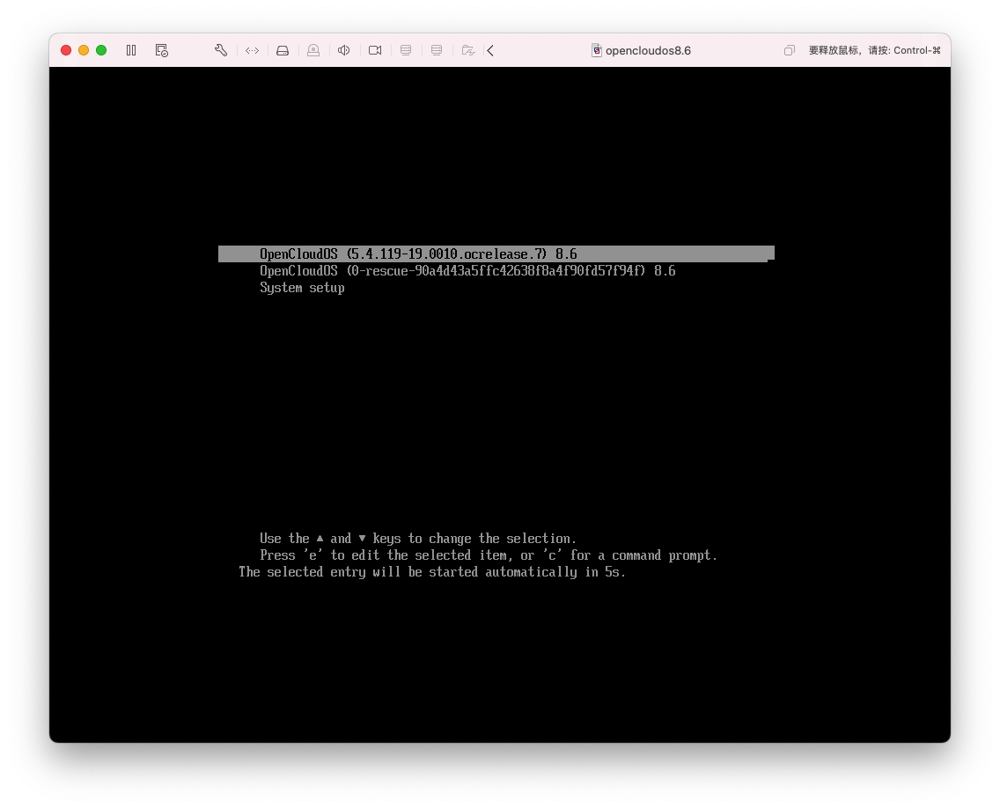
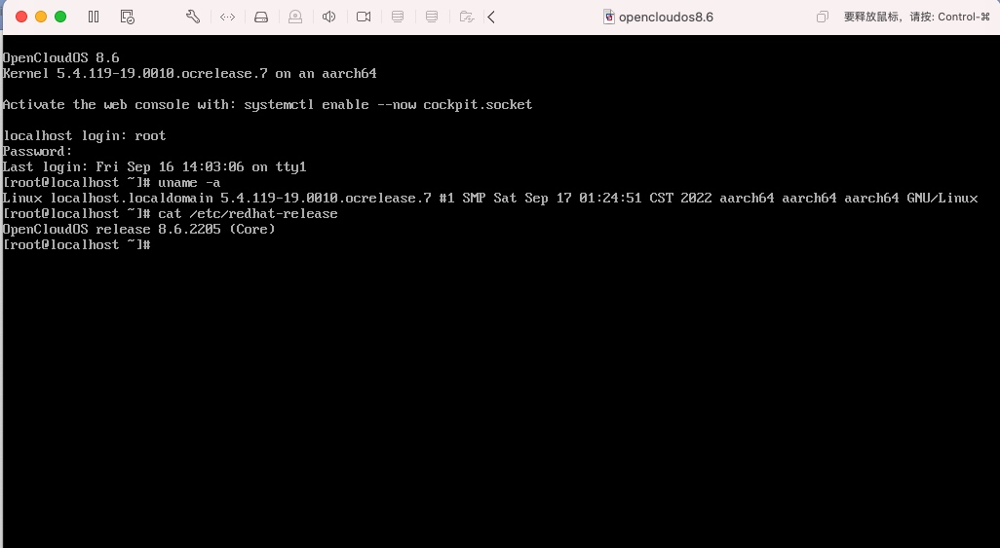

前言
在centos7比较晚的版本，以及centos8的aarch64的版本里面，内核的pagesize已经默认改成了64K，而mac M1的操作系统底层最大支持的pagesize是16K的，所以启动系统的时候，安装就直接闪退

显示是上面的效果，这个在centos系统里面都有这个问题，fedora里面就还是维持4k，没有问题
问题分析
操作系统安装的时候会加载一个内核，这个地方需要修改的地方
- initrd.gz
- vmlinuz
这两个需要修改为4K的
然后加载安装的时候，会加载install.img，这个里面带的是系统安装过程需要的内核模块，所以这个地方也需要替换
进入安装系统以后，安装的内核rpm包也是64k的，那么也需要把这个地方替换掉
上面的步骤完成以后，打的新的iso 就是可以正常在M1下运行的ISO了


说明
M1是aarch64架构的，可以使用vmware fusion 做虚拟机，这个是免费的，不用购买pd来做，那么这个M1的架构有什么好处，就是如果在做国产化或者arm的适配的时候，有一个高性能的虚拟机会方便的很多，比如需要对opencloudos进行arm的其它包的开发的时候，如果物理机器资源不是那么充足的情况下，就可以独立在虚拟机里面完成适配，目前看就是这个pagesize影响了安装，其它的ubuntu，centos，也都做了定制ISO进行了发布
安装部分内核调用了fedora的一部分东西，所以分区如果不喜欢看到fedora字样，可以不用lvm分区即可，不过这个本身是虚拟机，问题不大，ISO其它部分没有做任何改动
资源地址
链接: https://pan.baidu.com/s/1-UBAAco0GQTDKLrQtl8IMA?pwd=x9bp 提取码: x9bp
开源摘星计划
本文已参与「开源摘星计划」，欢迎正在阅读的你加入。活动链接：https://github.com/weopenprojects/WeOpen-Star